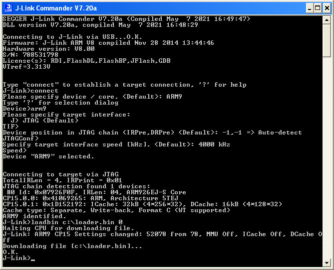
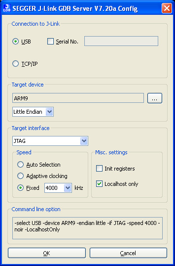
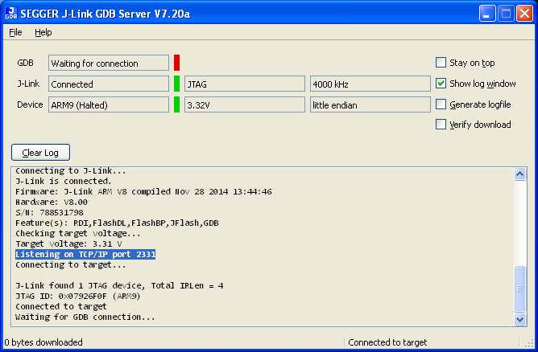
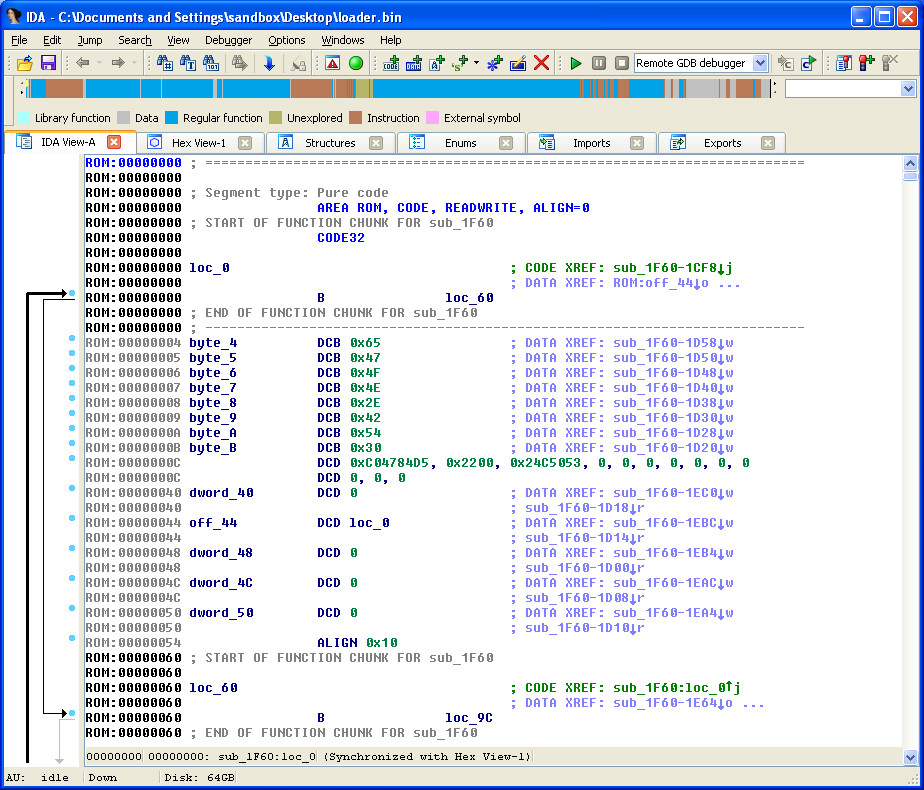
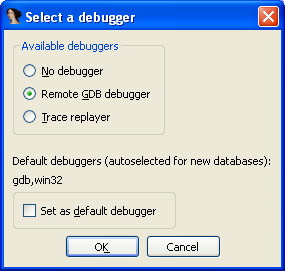
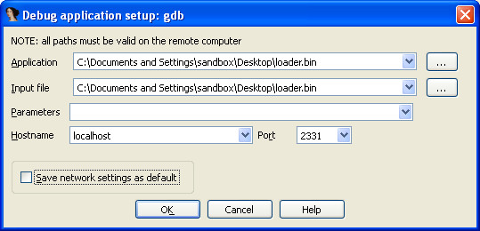
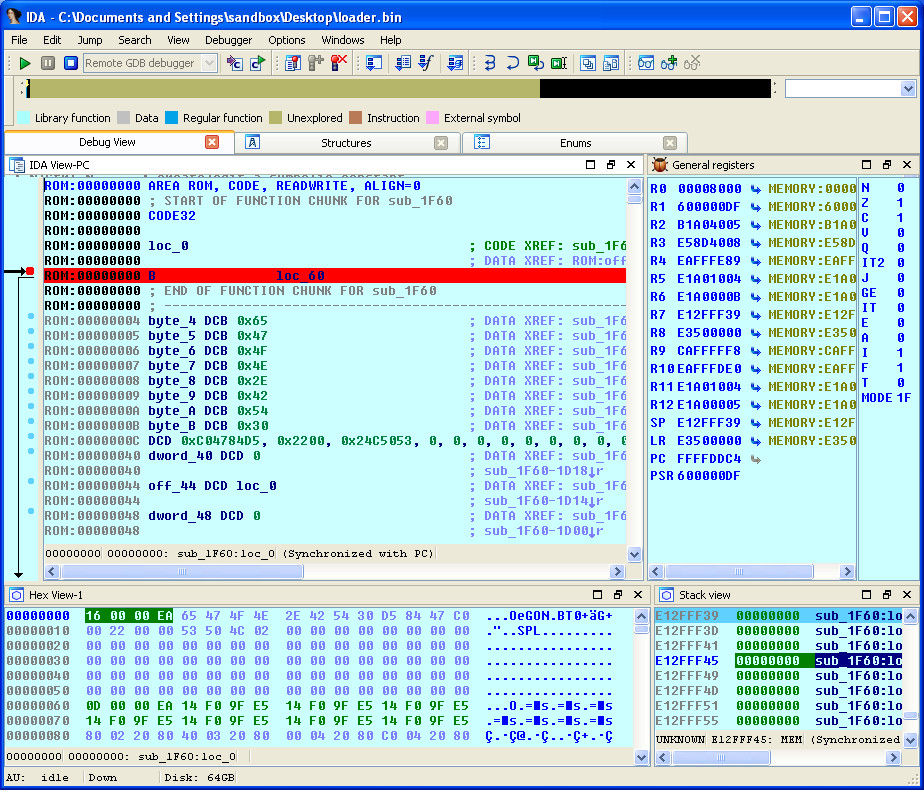
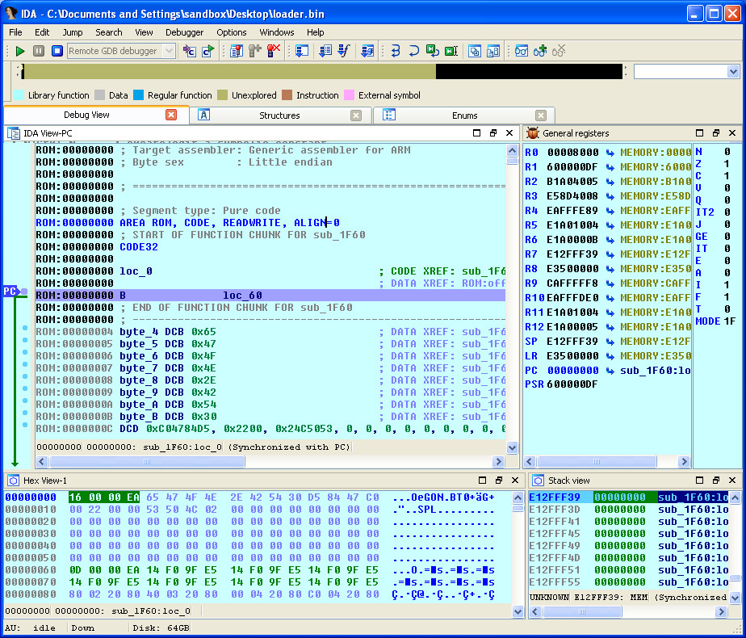
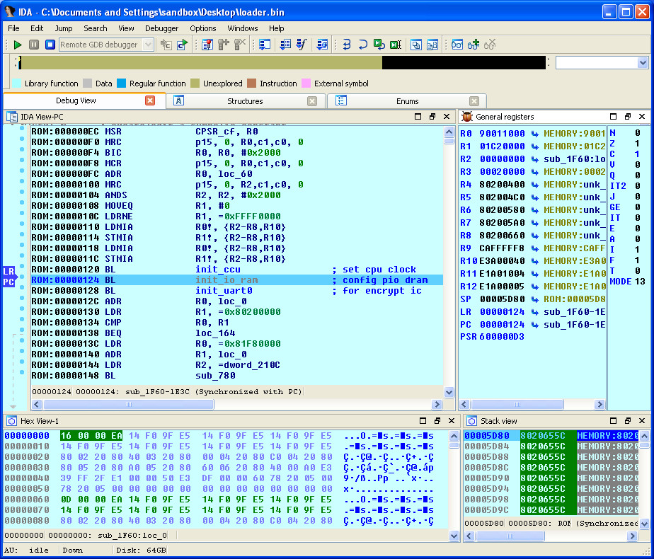
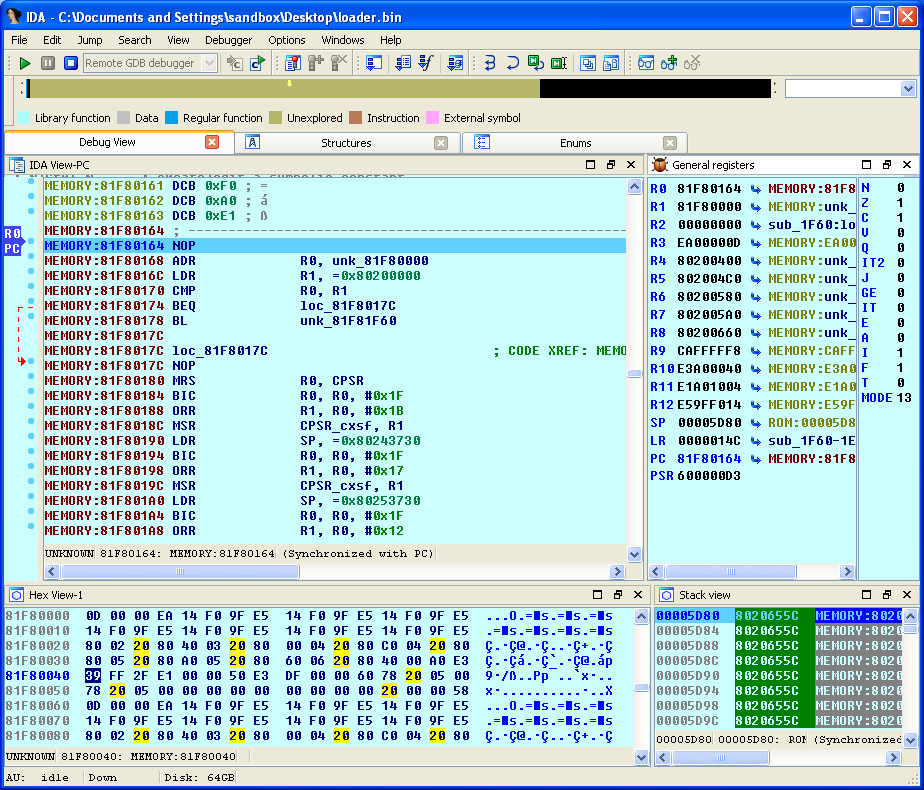

由於BROM只有32KB，加上韌體程式在前面就會把主要ROM複製到0x80000000，因此，抓前面32KB就可以，注意此時SPI Flash要燒錄官方原本的韌體，這樣才可以讓它加載到0x80000000
$ dd if=boot_spiflash.img of=loader.bin bs=1K count=32
32+0 records in
32+0 records out
32768 bytes (33 kB, 32 KiB) copied, 0.000192325 s, 170 MB/s
拔除JTAG接線，讓F1C100S進入燒錄模式，接著連接JTAG並且使用如下命令載入程式









